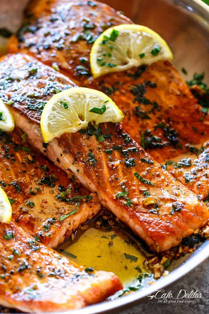

Home
Lemon Garlic Salmon

Description:
Simple and easy to make lemon garlic salmon drizzled with butter. With minimal ingredients and minimal
cook time this dish is easy to make and even easier to eat!
Ingredients:
- 2 Lemons
- Fresh Garlic (minced or finely chopped)
- Extra Virgin Olive Oil
- Butter
- Spices & Herbs:
- Oregano
- Paprika
- Black Pepper
Steps:
- Make the lemon garlic sauce:
- In a small bowl or jar, mix together the lemon juice, olive oil, garlic, lemon zest and spices.
- Prepare the Salmon:
- Prepare a baking sheet lined with a large piece of foil (foil needs to be large enough to wrap salmon).
Brush the top of the foil with extra virgin olive oil. Pat salmon dry and season well with kosher salt,
and place on the prepared pan. Now, pour the tasty lemon-garlic sauce all over the salmon evenly. Add
lemon slices (because never enough lemon when it comes to salmon)! Wrap the foil over and fold to secure
shut at the top.
- Bake:
- Bake salmon (wrapped in foil) in a 375 degrees F heated-oven. Bake for 15 minutes or so, depending on
thickness (if your salmon is 1 ½ inches or more in thickness, it may take a little bit longer.)
Remove from oven and uncover, then place under the broiler for a couple more minutes. Garnish with a
little fresh parsley.
- Drizzle and Serve:
- Lastly take desired amount of butter and place it in the microwave for about 20-30 seconds to melt.
Drizzle over the top of your salmon and enjoy!